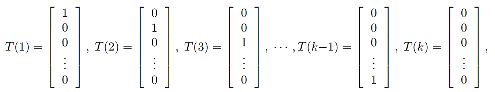

监督学习-回归¶
线性的规划中，假设函数（hypothesis）被设定为
损失函数(cost function)
1.LMS algorithm¶
取一个 \(\theta\) 使得 J 最小。

\(\alpha：learning\ rate\)

二者比较
- Batch是可以得到收敛解的，而stochastic大概率会在最优解处振荡。但是后者可以较好处理大数据情况
2.The normal equations¶
矩阵的求导

矩阵迹的基本性质
-
\[\begin{cases} trABC = trCAB = trBCA\\ trABCD = trDABC = trCDAB = trBCDA\\ trA = trA^T\\ tr(A + B) = trA + trB\\ tr\ aA = a\ trA \end{cases} \]
矩阵的迹与微分的关系
-
The normal equations¶
3.Probabilistic interpretation¶
从概率角度解释：为什么最小二乘损失函数J是一个比较好的选择？
假设
并假设 \(\epsilon^{(i)}\) 的分布为
极大似然估计函数为
取对数后，发现实际就是求最小值
4.Locally weighted regression¶
Fit \(\theta\) to minimize
where \(w^{(i)}\) is defined by
τ is called the bandwidth parameter
5.Logistic regression¶
·针对的是binary classification problem。
新的假设函数¶
对于分类型问题，线性最小二乘并没那么有效。
我们引入一个Logistic funtcion
g(z)的一个性质
-
\[g'(z)=g(z)g(1-z)\]
选择新的假设函数
解决思路¶
假设
那么
最大似然函数

这里，我们是要求似然函数的最大值，所以采取梯度上升
6.Another algorithm for maximizing \(ℓ(θ)\)¶
Newtown's method¶
牛顿方法是一种找零点的方法。
对某些函数 \(f : R → R\) ,选取一个 \(\theta_0\) ，逐步下降最后趋近于0
应用¶
注意到：在\(ℓ(θ)\)的最大点处，\(ℓ'(θ)=0\) 。利用这一点我们得到更新方案
推广¶
如果 \(\theta\) 是一个多维的向量，那么更新方案改为
其中H是Hessian矩阵，
7.The exponential familly¶
- Exponential familly
- 如果一类分布可以写成 \(p(y; η) = b(y) exp(η^T T (y) - a(η))\)
- \(\eta\) 特征参数
- natrual parameter(canonical parameter)of the distribution 一般为向量
- \(T(y)\) 充分统计量
- sufficient statistic ，代表样本的分布情况（均值，方差等），包含样本的所有信息。
- \(a(\eta)\) 对数分配函数
- log partition function
Note
- 伯努利分布以及高斯分布都是指数分布族
- 多项式、泊松、gamma、beta、指数……
8.Consturcting GLMs¶
广义线性回归，其实就是通过某个激活函数，将线性回归的输出值映射成不同的分布。
构建一个GLM模型，一般建立在三个假设上
- \(y | x; θ \sim ExponentialFamily(η)\)
- \(T(y)=y\) ,这意味着我们需要让我们的假设函数h去满足 \(h(x)=E[y|x]\)
- 特征参数 \(\eta\) 与输入x之间满足线性关系 \(\eta=\theta^Tx\)
Note
- \(g(\eta)=E[T(y);\eta]\)被称为正则响应函数canonical response function
- \(g^{-1}\)被成为正则链接函数canonical link function
Softmax Regression¶
在这个问题中，y可以取k个值{1,2,...,k}
a.设定概率¶
设
$$ \phi_i=p(y=i;\phi) \quad i=1,2,...,k-1 $$ 来表示取不同值的概率
那么很容易就有
b.设定T(y)¶
在这里T(y)被设定为一个k-1维的向量，因为本问题的输出为k-1个概率组成的向量（于是可以得出第k个的概率），前面logistic的情况理解为k=2。
用 \((T(y))_i\) 表示T(y)的第i个分量,T(i)的第i个分量为1。

1{ } 计数
- 设定1{True}=1,1{False}=0
c.搭建GLM¶
可以得到一些特征函数

经过进一步推导，可以发现关系softmax function
根据假设3：\(η_i = θ_i^T x\) 最终可以得到输出